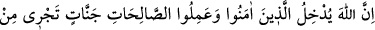
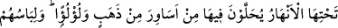
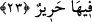

“Rabbimiz! Sen bunu boşuna yaratmadın.” (Âl-i İmran, 191) buyrulmuştur. Şerler,
kevnî aynlara nisbetledir, Allah’ın fiillerine nisbetle değildir. Allah, mülkünde
dilediğini yapma ve istediğine hükmetme hakkına sahiptir. Ateş/cehennem, celâlin
mazharıdır. Mazhariyeti cihetinden sırf hayırdır, bazı aynlara taalluku cihetinden sırf
şerdir. Allah, ateşi, yaradılmışlar Allah’ın celal ve kibriyâsının kadrini bilsinler,
O’ndan heybet ve korku üzere olsunlar, peygamberlerin terbiyesi ile edeblenmeyenleri
de Allah onunla edeblendirsin diye yaratmıştır.
Rivâyet olunur ki Allah Teâlâ Mûsâ (a.s.)’a şöyle buyurmuştur: “Ben (cenneti)
sakındığımdan dolayı cehennemi yaratmadım. Fakat ben dostlarımla düşmanlarımı bir
yurtta toplamaktan hoşlanmam.”
Denildi ki: Cehennemin yaratılması, şefkatin ağır basmasındandır. Nitekim bir adam
ahâlîye ziyâfet verir ve şöyle der: “Kim benim ziyâfetime gelirse ona ikramda
bulunurum. Gelmeyene de bir şey yok.” Ziyâfet veren bir başkası da cömertliğinin son
derecede, zirvede olduğu ortaya çıkması için şöyle der: “Kim dâvetime uyarak soframa
gelirse, ona ikramda bulunurum. Gelmezse onu döver ve hapsederim.” Elbette bu
kimsenin cömertliği öncekinden daha kâmil ve mükemmeldir. Allah Teâlâ: “Allah
kullarını selâm/esenlik yurduna çağırıyor.” (Yûnus, 10/25) buyurarak halkı kendi
dâvetine çağırdı. Akıllı kimseye gereken, Allah’ın kahrından emîn olmak için Allah’ın
dâvetine icâbet etmek ve emrine uymaktır.
Şeyh Sa’dî (k.s.) der ki:
Niyaz elini henüz ecel bağlamış değil
Ellerini Hakk’ın dergâhına kaldır
Sen cezaya çarptırılmadan önce af kapısını çal
Dayak altında iken feryâd ve figânın faydası yoktur
Komşularından ve yakınlarından utandığın gibi
Seni yaratan Allah’tan da öylece utan
Günahlarından şu anda kork ki
Kıyâmet günü kimseden korkun olmasın
Ey Sâdî, meyveyi dikenler yermiş
Harmanı da tohum saçanlar dermiş
23. Muhakkak ki Allah, îmân edip iyi davranışlarda bulunanları, zemininden